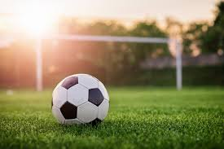
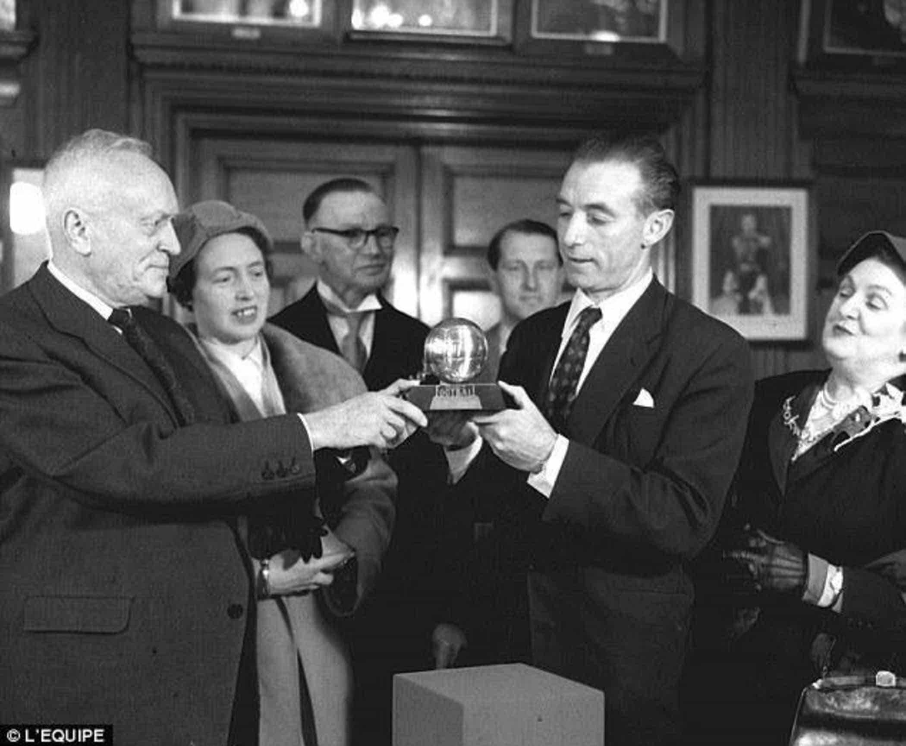
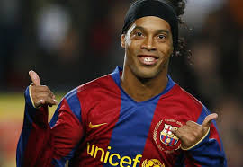

Hoşgeldiniz
Futbol Evrenine hoşgeldiniz.
Futbol, dünyanın en popüler sporu olarak yüzyılları aşan bir tarihe ve kültüre sahiptir. Antik Yunan ve Roma'da oynanan oyunlardan günümüzün profesyonel liglerine kadar uzanan futbol, küresel bir fenomen haline gelmiştir. Futbol, sadece bir oyun olmanın ötesine geçerek milyonlarca insan için mutluluk, birlik ve kutlama kaynağı olmuştur. İster sıradan bir izleyici olun, ister sıkı bir taraftar, futbolun büyüsü her zaman kendine hayran bırakır.
UEFA Şampiyonlar Ligi, Avrupa'nın en prestijli kulüp turnuvasıdır ve elit takımların ve oyuncuların zafer için mücadele ettiği bir arenadır. Real Madrid, Manchester City ve Bayern Münih gibi kulüpler, bu turnuvada üstün performanslarıyla öne çıkar. Nefes kesen goller, dramatik geri dönüşler ve ikonik anlar, bu turnuvayı taraftarlar için unutulmaz kılar.
Pele, Diego Maradona ve Lionel Messi gibi futbol efsaneleri, sporda silinmez izler bırakmış, nesiller boyu oyunculara ve taraftarlara ilham olmuştur. Bu efsanelerin üstün yetenekleri, kararlılıkları ve başarıları, futbolun neden "güzel oyun" olarak adlandırıldığını bize hatırlatır.
FIFA Dünya Kupası, dört yılda bir düzenlenerek ülkeleri futbol sevgisiyle bir araya getirir. Brezilya'nın turnuva tarihindeki üstünlüğünden, 2018'deki Hırvatistan gibi sürpriz hikâyelere kadar Dünya Kupası, futbolun gerçek özünü; tutku, azim ve gururu yansıtır.
Futbol stadyumları, yalnızca birer mekan değil, oyunun kalbidir. Brezilya'daki tarihi Maracanã'dan Almanya’daki ultra modern Allianz Arena’ya kadar bu ikonik yapılar, taraftarların hafızalarına kazınan unutulmaz maçlara ve anlara ev sahipliği yapar.
El Clásico (Real Madrid vs. Barcelona) ve Kuzey Batı Derbisi (Manchester United vs. Liverpool) gibi rekabetler, futbolun yoğun rekabet ruhunu tanımlar. Bu maçlar, sporu aşarak kültürel birer fenomen haline gelir ve dünya çapında milyonları etkiler.
Kadın futbolu son yıllarda büyük bir ivme kazanmıştır. Megan Rapinoe ve Alexia Putellas gibi oyuncular, bu yükselişe öncülük etmektedir. FIFA Kadınlar Dünya Kupası ve UEFA Kadınlar Şampiyonlar Ligi, rekor izleyici sayılarına ulaşarak kadın futbolundaki büyük yeteneği gözler önüne sermektedir.
Yerel futbol, geleceğin yıldızlarını yetiştirmede hayati bir rol oynar. Yerel kulüpler, gençlik akademileri ve topluluk ligleri, futbolun büyümesini ve herkes için erişilebilir olmasını sağlar. "Herkes İçin Futbol" gibi programlar, oyunda kapsayıcılığı ve çeşitliliği teşvik eder.
Futbolun geleceği, teknoloji ve yenilikte yatıyor. VAR (Video Yardımcı Hakem), çizgi teknolojisi ve ileri analitik sistemler, oyunun hem adil oynanmasını hem de daha keyifli bir taraftar deneyimi sunmasını sağlıyor.